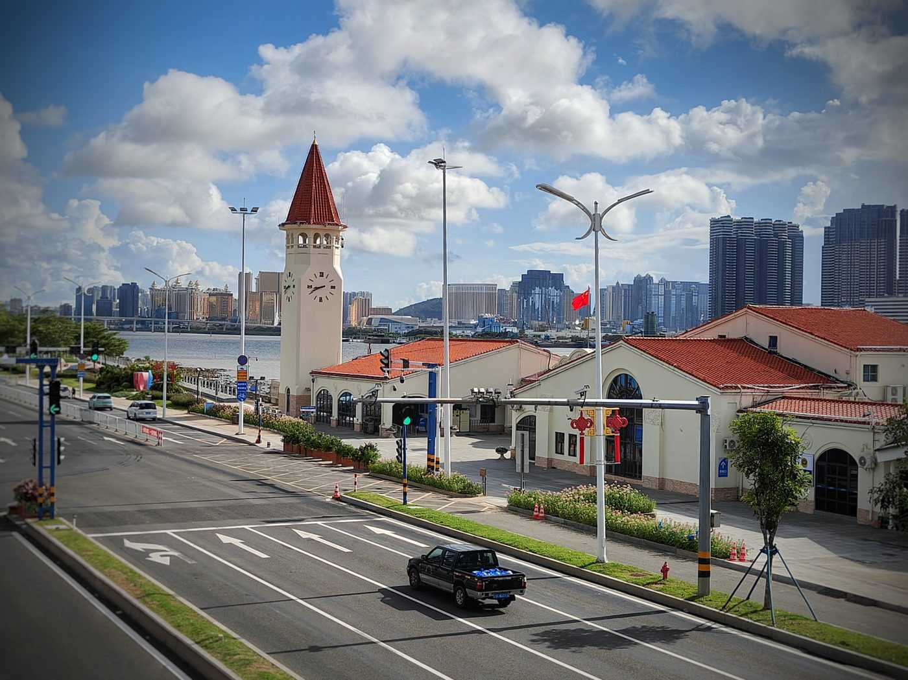
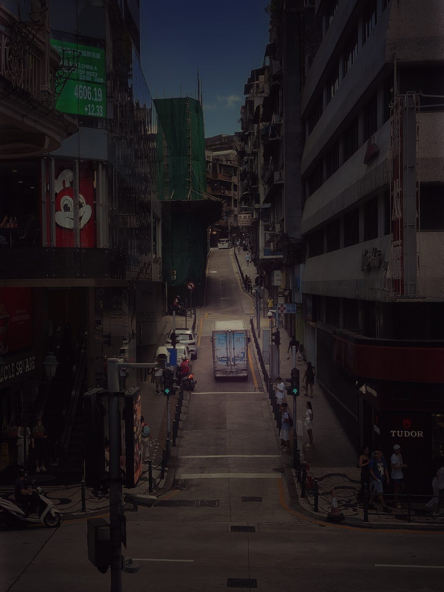
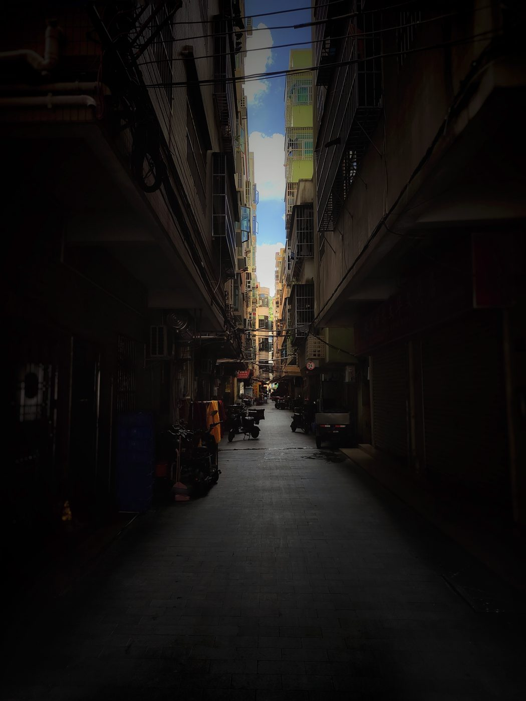
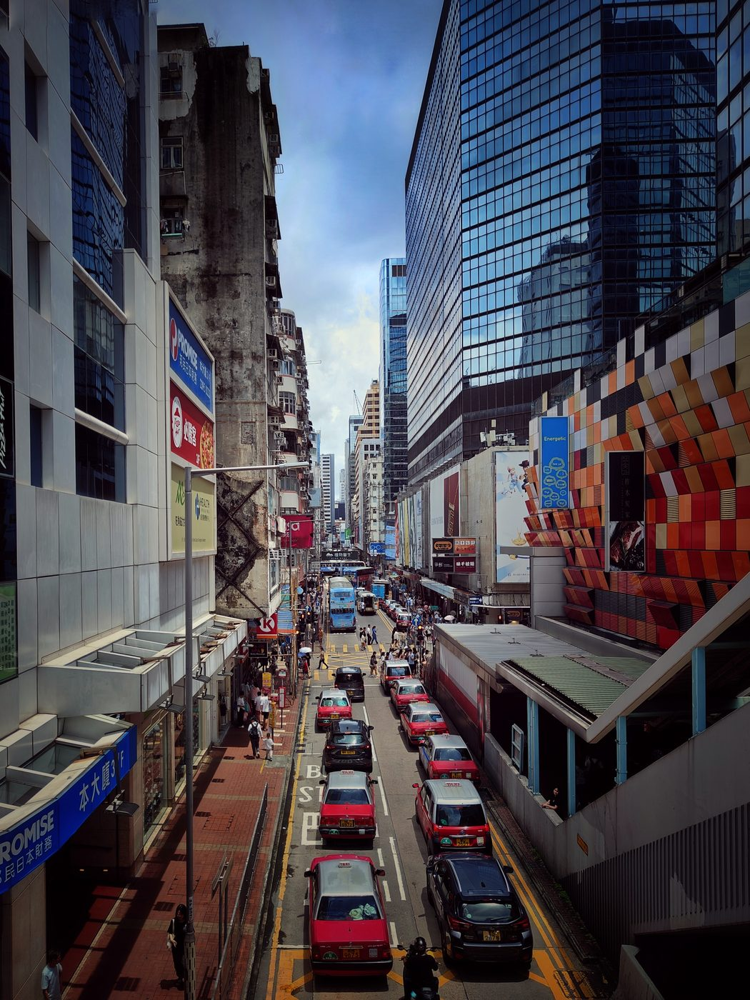
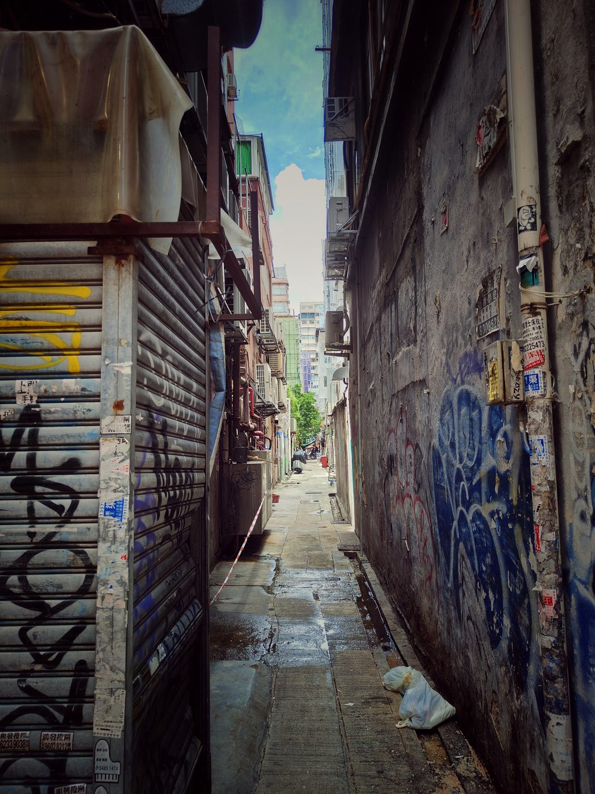
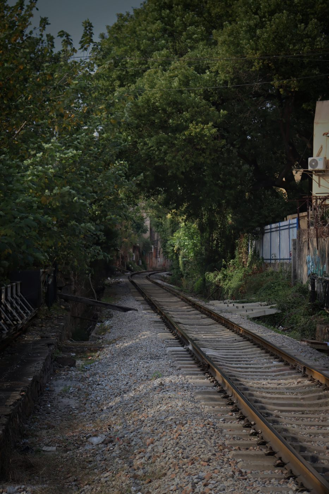
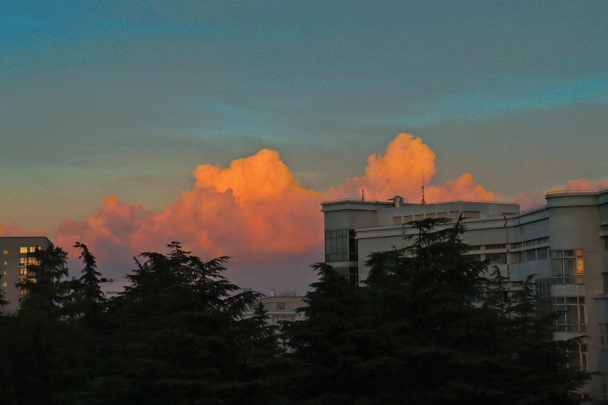

山、老街与铁轨
2024 年 8 月 — 2025 年 3 月
PHOTOGRAPHS · 2024
2024 年 8 月 — 2025 年 3 月
PHOTOGRAPHS · 2024
照片 二〇二四
2024 年 8 月 — 2025 年 3 月 · 43 张
PHOTOGRAPHS
八月





十月
十一月
三月


照片 二〇二四 · 2024 年 8 月 — 2025 年 3 月
共 43 张照片，按拍摄时间排列。其中 2 张与相邻照片几乎相同的连拍没有收进来。网页使用压缩副本，原始文件保存在 photo/2024/ 内，没有改动。
PHOTOGRAPHS · 2024